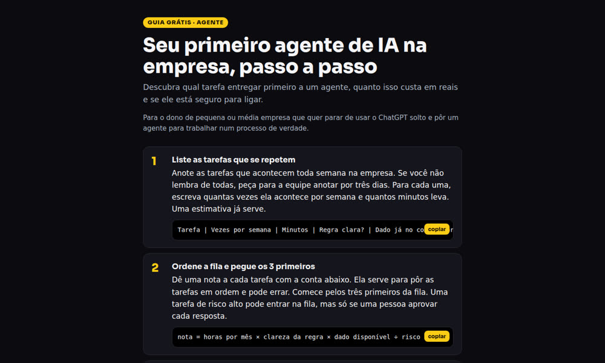
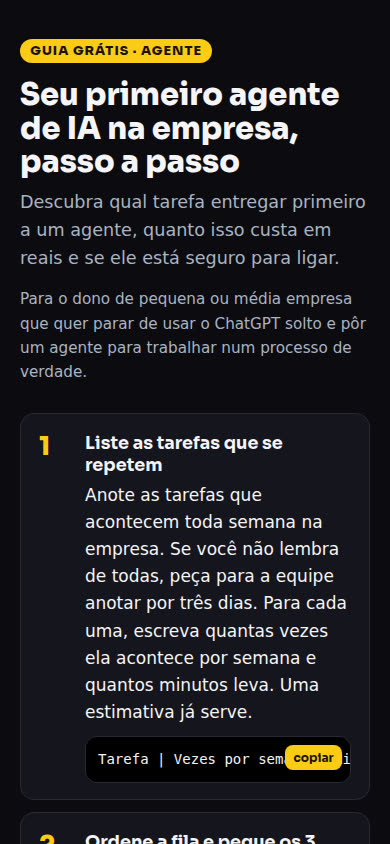

Tú indicas la palabra, el tema y de dónde obtener el contenido. Se publica una página con material gratis y quedan listas las respuestas para pegar en el comentario, el mensaje directo y la historia.
lead-comenta crea la página de la «guía gratis» que prometes cuando dices en la publicación «comenta PALABRA y te la mando». Sirve para quienes publican Reels o carruseles con esta invitación y necesitan tener el material listo antes de publicar. Indicas la palabra, el tema y una fuente (una página de internet o un archivo de texto tuyo); la herramienta escribe una guía corta de 4 a 7 pasos solo con la información de la fuente, publica la página en GitHub Pages (el servicio gratis de GitHub que mantiene páginas en línea) y prepara las respuestas. No envía mensajes por su cuenta: hoy pegas la respuesta a mano en el mensaje directo. Para usarla, necesitas Python 3, Claude Code y una cuenta de GitHub. Hoy la página y las respuestas salen en portugués.
Una página por palabra, con el contenido verificado y las respuestas escritas. Solo tienes que revisar y responder.
Cada palabra tiene su propia dirección, por ejemplo .../paginas/agente/: título, para quién es, de 4 a 7 pasos, una recomendación y el enlace al material completo. Se abre bien en el celular e incluye un botón para copiar los textos de ejemplo.
Claude escribe la guía solo con lo que aparece en la página o el archivo que indicaste, sin inventar cifras ni herramientas. Si la fuente tiene poco contenido, la guía será corta. La lees antes de publicarla.
Para cada palabra se genera un archivo respostas.md con tres textos: la respuesta en el comentario (sin enlace, porque Instagram suele ocultar los comentarios con enlaces), el mensaje directo con el enlace y el texto para la historia.
Un comando genera todo; tú lo revisas y lo publicas. Claude Code escribe el texto y se ejecuta sin abrir una ventana (claude -p) con tu suscripción: no usa una clave de API paga.
Todavía no existe. lead-comenta no envía mensajes a nadie: tú (o alguien de tu equipo) abre el mensaje directo de quien comentó y pega el texto listo. Las opciones para automatizar el envío están descritas en el DECISAO-DM.md (en portugués) y todavía no se eligieron.
Una computadora con Linux o Mac (en Windows, puedes usar WSL, el Linux que funciona dentro de Windows). Los comandos se escriben en la terminal, la pantalla de texto de la computadora.
Es el lenguaje en el que se escribió la herramienta. No necesitas instalar paquetes adicionales. Comprueba si ya lo tienes (en Mac, si falta: brew install python; en Ubuntu: sudo apt install python3).
python3 --versionEs quien escribe la guía. Instálalo desde el sitio claude.com/claude-code, ábrelo una vez con claude e inicia sesión en tu cuenta. Necesita un plan de pago de Claude (Pro o superior). Después, comprueba:
claude --versiongit descarga y publica el proyecto; gh es el programa de GitHub para la terminal. La página se publica con GitHub Pages desde tu cuenta; el archivo que la publica (.github/workflows/pages.yml) ya viene en el proyecto.
Ubuntu o WSL
sudo apt install git ghMac
brew install git ghSi Ubuntu dice que no encuentra el paquete gh, sigue las instrucciones de cli.github.com.
Comandos que puedes copiar, en orden. Los pasos 1 y 2 se hacen una sola vez; del 3 al 7, una vez por palabra.
Descarga la herramienta y muestra las palabras que ya existen. Si aparece la línea de AGENTE (el ejemplo incluido), está funcionando.
git clone https://github.com/inematds/lead-comenta ~/lead-comenta cd ~/lead-comenta python3 lead.py lista
Las páginas deben estar en tu cuenta. Primero, inicia sesión en tu cuenta de GitHub desde la terminal. La opción --scopes workflow permite enviar el archivo que publica las páginas. El comando hace cuatro preguntas; responde así:
gh auth login --scopes workflow
La primera vez, git también necesita tu nombre y correo electrónico para registrar quién envió cada cambio. Reemplázalos por los tuyos:
git config --global user.name "Tu Nombre" git config --global user.email "tu@ejemplo.com"
Busca tu nombre de usuario de GitHub; aparecerá en pantalla. En el siguiente bloque, reemplaza TU-USUARIO por ese nombre. El primer comando crea tu repositorio (la carpeta del proyecto en GitHub), el segundo activa GitHub Pages y el tercero envía el proyecto.
gh api user -q .login
gh repo create lead-comenta --public --source . --remote mio gh api -X POST repos/TU-USUARIO/lead-comenta/pages -f build_type=workflow git push mio main
Por último, dile a la herramienta cuál es la dirección de tus páginas para que incluya el enlace correcto en las respuestas. Este export es válido hasta que cierres la terminal; para no repetirlo, pega la misma línea al final del archivo ~/.bashrc (en Mac, ~/.zshrc).
export LEAD_BASE_URL=https://TU-USUARIO.github.io/lead-comenta/paginas
Tu copia incluye el ejemplo AGENTE de INEMA, que sigue apuntando a la dirección de INEMA. Puedes dejarlo como referencia o borrar la carpeta paginas/agente y el fragmento "AGENTE" del archivo palavras.json.
.md o .txt). Guarda el archivo fuera de la carpeta del proyecto, en tu carpeta personal (~): todo lo que queda dentro de la carpeta del proyecto va a GitHub, que es público. Para crear el archivo, abre un editor de texto (en la terminal: nano ~/mi-material.md), pega el contenido y guárdalo (en nano: Ctrl+O, Enter y Ctrl+X). Comprueba que la fuente trate el mismo tema que la publicación.Reemplaza PROMPT, el tema y la fuente por los tuyos. En pantalla verás «lendo a fonte…» (leyendo la fuente…), luego «escrevendo o guia (claude -p)…» (escribiendo la guía (claude -p)…) y, al final, «pronto» (listo) con la ruta de la página. Puede tardar unos minutos.
python3 lead.py nova PROMPT --tema "5 prompts para responder a clientes" --fonte ~/mi-material.md
El botón «Ver el material completo» lleva a la fuente, si es un enlace. Para apuntar a otro lugar (tu curso, tu sitio), agrega --link-final https://seu-site. Si la palabra ya existe, la herramienta te avisa; para volver a generarla encima de la anterior, agrega --refaz.
Abre la página en el navegador y lee cada paso: nada debe ir más allá de lo que dice la fuente. El primer comando es para Linux; en Mac, reemplaza xdg-open por open; en WSL, por explorer.exe. Si algo no está bien, mejora la fuente y vuelve a generar con --refaz.
xdg-open paginas/prompt/index.html
Envía la página a tu copia en GitHub. Queda publicada en aproximadamente 1 minuto (la primera vez puede tardar unos minutos; el progreso aparece en la pestaña Actions de tu repositorio), en https://TU-USUARIO.github.io/lead-comenta/paginas/prompt/.
git add -A git commit -m "guia PROMPT" git push mio main
Muestra los tres textos listos. Para cada persona que comentó: primero envíale por mensaje directo el texto con el enlace; después responde el comentario con el texto corto («¡Te escribí por mensaje directo!»). El texto para la historia sirve para recordar a quienes todavía no comentaron. Los mismos textos se guardan en paginas/prompt/respostas.md.
python3 lead.py resposta PROMPT
Tema «6 tareas tediosas que un agente de IA ya hace por ti (pequeña empresa)», con una guía de un kit gratis de INEMA como fuente. Se generó una guía de 6 pasos. Abrir la página.


Y el archivo respostas.md que salió junto con la página. Hoy la herramienta escribe la página y estas respuestas en portugués.
## Resposta pública no comentário (curta, sem link: o Instagram esconde comentário com link) Te mandei no direct! Se não chegar, me chama por lá com AGENTE. ## Mensagem direta (DM) Oi! Aqui está o guia grátis que você pediu: **Seu primeiro agente de IA na empresa, passo a passo** https://inematds.github.io/lead-comenta/paginas/agente/ São 6 passos curtos. Qualquer dúvida, responde aqui. ## Story (texto) Quem comentou AGENTE: o guia já está no seu direct. Ainda não comentou? Vai no post e comenta AGENTE.
Sin promesas: lo que está listo y lo que depende de una decisión.
palavras.json.